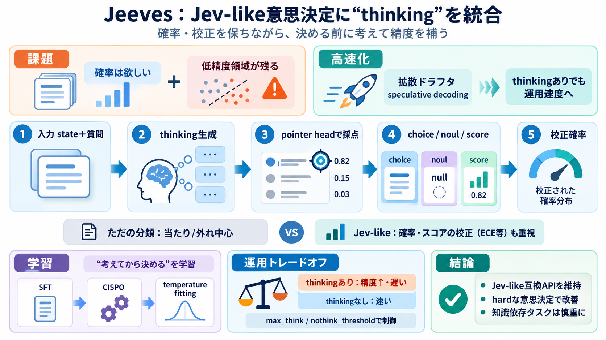

Release Kev-0.8B, Kev-4B, Kev-9B · jaredpalmer/kev
2026-09-20 update: the family moved to Qwen3.5 bases (same training data and recipe as before). On the locked test, out …

2026-09-20 update: the family moved to Qwen3.5 bases (same training data and recipe as before). On the locked test, out …
Each pair is development / test accuracy, and lower Brier score is better calibration. Kev's README recommends Kev-4B as…
Each pair is development / test accuracy, and lower Brier score is better calibration. Kev's README recommends Kev-4B as…
| Split | n | acc | --- | easy | 48 | 1.000 | | original | 72 | 0.903 | | hard (public) | 111 | 0.568 | hard by famil…
| EnvBench v0.1 public / held-out (skill, 0–100) | 50.5 / 46.8 | 47.7 / 47.0 | | Qwen3.5-9B, same prompt, zero-shot — En…